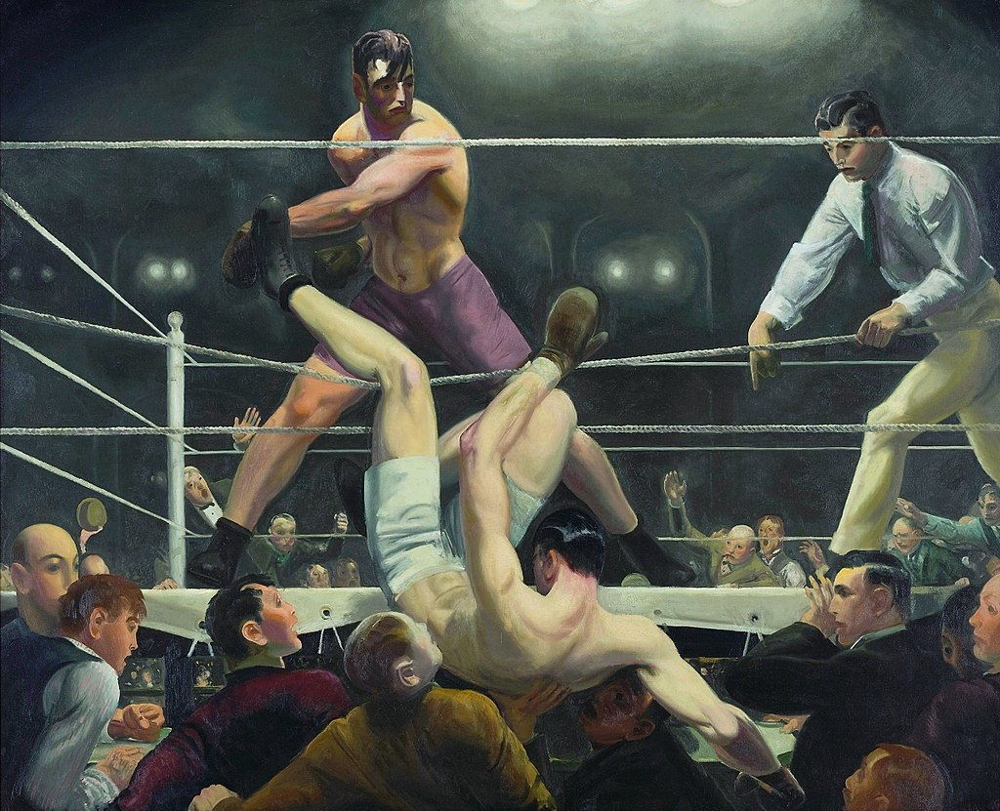

<head>
<meta charset="UTF-8" />
<meta name="keywords" content="drawing, painting" />
<meta name="description" content="drawings by Sunjy" />
<title>Sunjy</title>
<link rel="shortcut icon" type="image/x-icon" href="../../mImages/mCommon/favicon.ico" media="screen" />
<link rel="stylesheet" type="text/css" href="../../mCsses/mCommon/mCssA.css" />
<link rel="stylesheet" type="text/css" href="../../mCsses/mCommon/mCssB.css" />
<link rel="stylesheet" type="text/css" href="../../mCsses/mCommon/mCssC.css" />
<link rel="stylesheet" type="text/css" href="../../mCsses/mCommon/mCssD.css" />
<link rel="stylesheet" type="text/css" href="../../mCsses/mContent/mCssA.css" />
<link rel="stylesheet" type="text/css" href="../../mCsses/mContent/mCssB.css" />
<link rel="stylesheet" type="text/css" href="../../mCsses/mContent/mCssC.css" />
<link rel="stylesheet" type="text/css" href="../../mCsses/mContent/mCssD.css" />
</head>
<script type="text/javascript" src="../../mScripts/mContent/mContentAA.js" /></script>
<script type="text/javascript" src="../../mScripts/mContent/mContentAB.js" /></script>
<script type="text/javascript" src="../../mScripts/mContent/mContentAC.js" /></script>
<script type="text/javascript" src="../../mScripts/mContent/mContentAD.js" /></script>
<script type="text/javascript"></script> 
<script type="text/javascript">
document.write('<div class="mImgAbsolute"></div>');
/*
document.write('<p class="mFontSizeBColor" />From a white paper...</p>');
document.write('<table class="center"><tr><td>');
document.write('');
document.write('</td></tr></table>');
*/
</script>


<script type="text/javascript">
document.write('<p class="mFontSizeBColor" />Dempsey and Firpo</p>');
document.write('<p class="mFontSizeSColor" />“Dempsey and Firpo” by George Bellows depicts the boxing match between Jack Dempsey and Luis Firpo on September 14, 1923.<br><br>The painting depicts the dramatic moment when Firpo knocked Dempsey out of the ring, even though Dempsey was the eventual winner that night.<br><br>Painted in the style of the Ashcan School movement, it has become Bellows’ most famous painting. Bellows gave himself a cameo as the balding man at the extreme left of the picture.<br><br>The fight was a historic boxing fight. It was the first time that a Latin American fighter challenged for the World Heavyweight title, and it was one of the defining matches of Dempsey’s career.<br><br>Dempsey had been champion since 1919, and Firpo was one of the top heavyweights of the world. Eighty thousand fans paid to see the fight live at the Polo Grounds in New York City.<br><br>In the aftermath, Dempsey and Firpo both became icons. Dempsey later lost his Heavyweight title to Gene Tunney, he did military service and opened a restaurant in New York before dying in 1983.<br><br>Firpo became revered in Argentina, and most of Latin America, there are several streets and avenues named after him, as well as a football team in El Salvador. He died a wealthy man in 1960 in Buenos Aires.<br></p>');
document.write('<table class="center" /><tr><td>');
document.write('<br>The painting depicts the dramatic moment when Firpo knocked Dempsey out of the ring, even though Dempsey was the eventual winner that night.<br><br>Painted in the style of the Ashcan School movement, it has become Bellows’ most famous painting. Bellows gave himself a cameo as the balding man at the extreme left of the picture.<br><br>The fight was a historic boxing fight. It was the first time that a Latin American fighter challenged for the World Heavyweight title, and it was one of the defining matches of Dempsey’s career.<br><br>Dempsey had been champion since 1919, and Firpo was one of the top heavyweights of the world. Eighty thousand fans paid to see the fight live at the Polo Grounds in New York City.<br><br>In the aftermath, Dempsey and Firpo both became icons. Dempsey later lost his Heavyweight title to Gene Tunney, he did military service and opened a restaurant in New York before dying in 1983.<br><br>Firpo became revered in Argentina, and most of Latin America, there are several streets and avenues named after him, as well as a football team in El Salvador. He died a wealthy man in 1960 in Buenos Aires.<br>" />');
document.write('</td></tr></table>');
</script>


